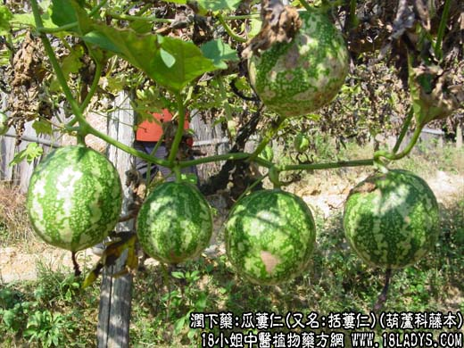

【中药概述】瓜蒌仁(又名括蒌仁)为葫芦科藤本植物括蒌的成熟种子。甘、寒。归肺、大肠经。 1．润肠通便：用于燥结便秘等。常与火麻仁，郁李仁等配伍同用。水煎服。 2．清肺化痰：用于燥痰咳嗽，痈肿等，可与贝母，天花粉，茯苓等药同用。 【药效鉴别】瓜蒌仁偏于润燥化痰，润肠通便。 【化学成分】含脂肪油、皂甙、蛋白质等。 【用量用法】5——10g，打碎入煎剂。或入剂。
本文解释权归中药大全，本文地址： https://www.daquan.com/post/1906.html